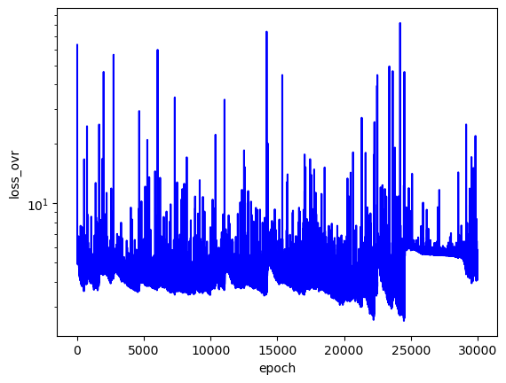
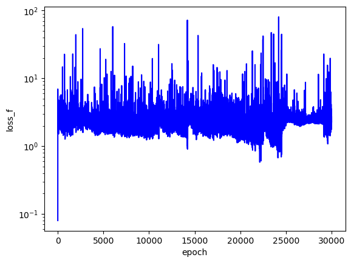
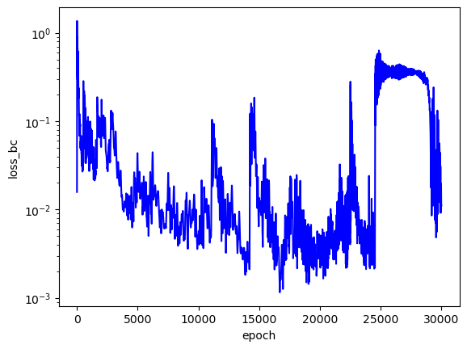
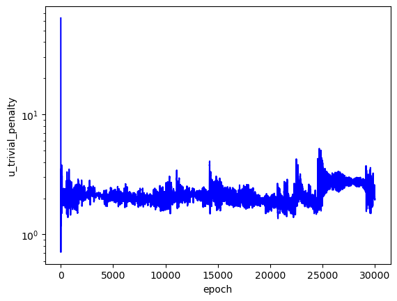
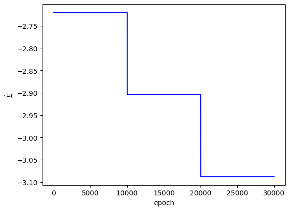
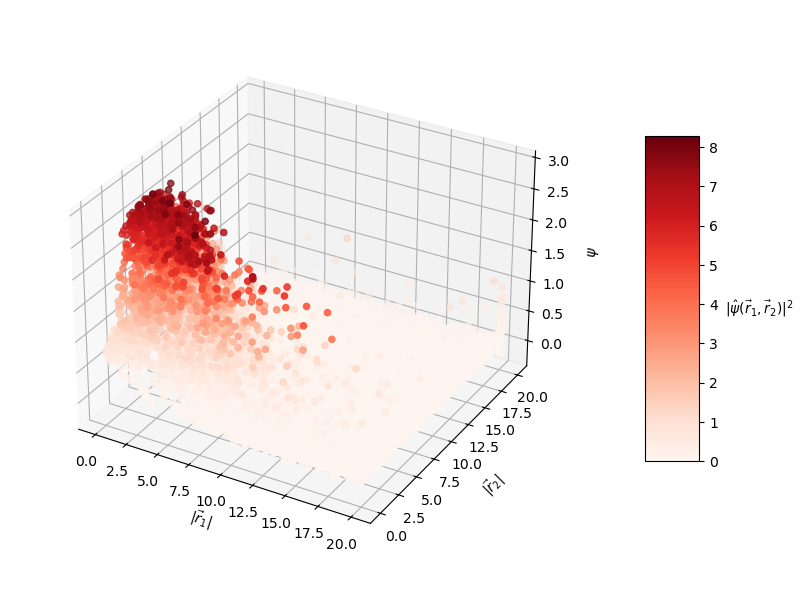
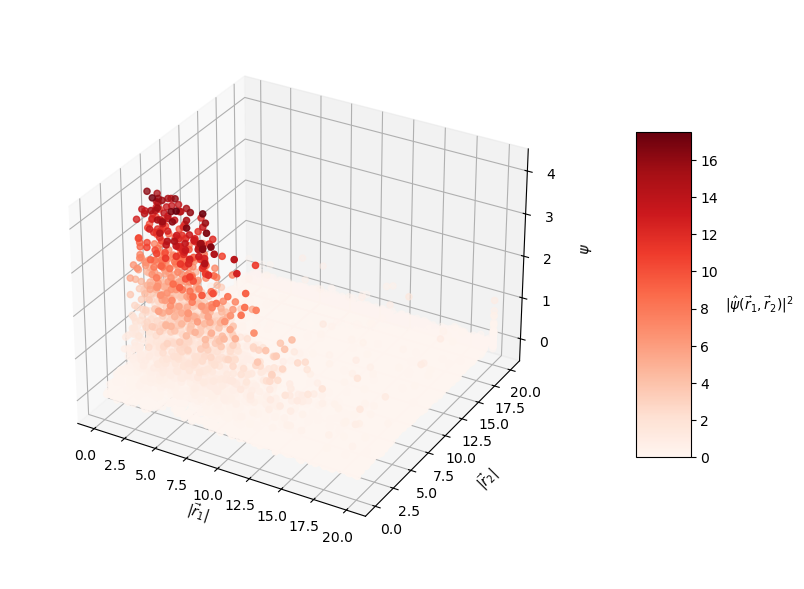
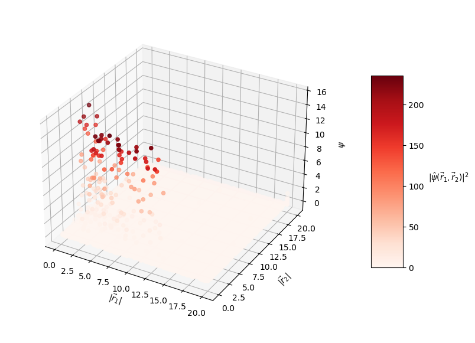

PINNs Part 4: Solving the Helium Atom Schrodinger Equation
01/22/2026
In this writeup I train a PINN to predict solutions to the Helium atom Schrodinger equation. After Hydrogen, Helium is the next element on the periodic table with an atomic number of 2, meaning a neutral Helium atom has 2 protons and 2 electrons. The addition of a second electron makes the Schrodinger equation of the Helium atom unsolvable analytically (at least, nobody has come up with an analytical solution yet).
All code used in this writeup can be found in this notebook.
The Helium atom Schrodinger equation
Helium has two electrons, only one of which can be in an excited state at a time while the other remains in the ground state. The Hamiltonian presented previously for Hydrogen can be generalized to an atom with $Z$ electrons
$$\begin{equation} \hat{H} = \sum_{j=1}^Z \left\{ -\frac{\hbar^2}{2m} \nabla_j^2 - \left( \frac{1}{4 \pi \varepsilon_0}\right) \frac{Ze^2}{|\vec{r}_j|} \right\} + \frac{1}{2} \left( \frac{1}{4 \pi \varepsilon_0} \right) \sum_{j \neq k}^Z \frac{e^2}{|\vec{r}_j - \vec{r}_k|} , \end{equation}$$
where $j$ represents the $j$th electron.
For Helium in specific, the Hamiltonian is
$$\begin{equation} \hat{H} = \left(-\frac{\hbar^2}{2m} \nabla_1^2 - \frac{1}{4 \pi \varepsilon_0} \frac{2e^2}{|\vec{r}_1|} \right) + \left(-\frac{\hbar^2}{2m} \nabla_2^2 - \frac{1}{4 \pi \varepsilon_0} \frac{2e^2}{|\vec{r}_2|} \right) + \frac{1}{4 \pi \varepsilon_0} \frac{e^2}{|\vec{r}_1 - \vec{r}_2|} . \end{equation}$$
The term involving the interaction of both electrons, $\frac{e^2}{|\vec{r}_1 - \vec{r}_2|}$, makes the equation too difficult to solve analytically as the equation no longer conveniently separates like the Hydrogen Schrodinger equation. When this Hamiltonian is applied to the Helium Schrodinger equation, we get
$$\begin{equation} -\frac{\hbar^2}{2m} \left(\nabla_1^2 \psi + \nabla_2^2 \psi \right) - \frac{e^2}{4 \pi \varepsilon_0} \left(\frac{2}{|\vec{r}_1|} + \frac{2}{|\vec{r}_2|} - \frac{1}{|\vec{r}_1 - \vec{r}_2|} \right) \psi = E \psi. \end{equation}$$
For ease of implementation in code, I'll expand this out to
$$\begin{equation} -\frac{\hbar^2}{2m} \left(\frac{\partial^2 \psi}{\partial x_1^2} + \frac{\partial^2 \psi}{\partial y_1^2} + \frac{\partial^2 \psi}{\partial z_1^2} + \frac{\partial^2 \psi}{\partial x_2^2} + \frac{\partial^2 \psi}{\partial y_2^2} + \frac{\partial^2 \psi}{\partial z_2^2} \right) - \frac{e^2}{4 \pi \varepsilon_0} \left(\frac{2}{|\vec{r}_1|} + \frac{2}{|\vec{r}_2|} - \frac{1}{|\vec{r}_1 - \vec{r}_2|} \right) \psi = E \psi. \end{equation}$$
Now, the PINN will take the positions of two electrons $[x_1, \text{ } y_1, \text{ } z_1]$ and $[x_2, \text{ } y_2, \text{ } z_2]$ as input instead of the single $[x, \text{ } y, \text{ } z]$ electron position in the Hydrogen problem. Once again, I will use the $E$ search algorithm to determine an $E$ input, and the PINN will predict the wavefunction, $\psi$.
Approximation methods
Since there is no analytical solution to the Helium Schrodinger, an approximation method must be used to estimate its solution. There are several common approaches that yield different levels of accuracy in their estimates for the energy level and wavefunction of Helium.
Perturbation theory and the variational method are often used to estimate properties of Helium (see Griffiths chapters 5 and 8). Perturbation theory provides the wavefunction and energy for any energy level, while the variational method only provides the energy of the ground state. I decided to focus on perturbation theory since it looked like it would provide a more useful output (any wavefunction and corresponding energy level). There are other applicable numerical approximation techniques, but I didn't spend much time exploring those options as perturbation theory looked good enough.
Perturbation theory works by first assuming that a trial wavefunction solves the Helium Schrodinger equation. The simplest trial wavefunction is the product of two Hydrogen atom wavefunctions. This trial wavefunction ignores interactions between the two electrons in Helium, and gives a ground state $E$ that is about $30 \text{ eV}$ off of the accepted experimental value. Perturbation theory perturbs that simple trial wavefunction with slight corrections to estimate a more correct wavefunction and energy value. The correction can be calculated to an arbitrarily high-order, but Griffiths suggests that a 2nd order correction is all that's really ever needed in practice. I tried and failed to find any resources that implement 2nd order perturbation theory to estimate the first few energy levels and corresponding wavefunctions of Helium, and resolved to figure out how to do it on my own.
To put it lightly, perturbation theory is difficult to understand and implement. I spent a couple dozen hours working through perturbation theory in order to come up with a practical way to use it in the context of this PINNs problem, and I think I developed an understanding of how to do so, but I'm still not very confident in some of my assumptions. Ultimately, I decided it wasn't worth the effort to spend more time trying to generate approximations for the first few energy levels of Helium as the work began to exceed the scope of what I wanted to accomplish with this project.
Without "correct" wavefunctions and energy values to compare the PINN's output to, it's hard to say how accurate the PINN's predictions are. Furthermore, my understanding of quantum theory beyond the Hydrogen atom is quite limited. I honestly don't understand much about multi-electron atoms because that's just chemistry and nobody likes chemistry. Further furthermore, I decided that I wanted to finally conclude this project, so, I settled on just training a PINN to learn the ground state of the Helium atom. The ground state energy of He has been reliably measured to be around $E = -79 \text{ eV}$. Similar to Hydrogen, the ground state wavefunction of Helium is expected to show decay as the radius of each electron increases (meaning that you are less likely to find an electron as the distance from the nucleus increases). Despite not having a "correct" approximation to compare the PINN's results to, I decided that the expectation of decay in the predicted wavefunction along with the Schrodinger equation loss term would provide enough info for me to pass judgement on the PINN's output.
My PINN approach
Similar to the Hydrogen PINN, I generated a sphere of points of a fixed radius to use as input data. Once again, I split the data into boundary condition and collocation sets. Helium has two electrons, which adds three more dimensions to the input space. If I used the same data generation scheme as for Hydrogen (pass the entire approximate 3D sphere of points as PINN input), the size of the generated input data would be squared. Since the Hydrogen data had around $10^4$ input points, this means the Helium data would have $10^8$ input points, an impractical amount considering my limited compute resources. To combat this, I simply sampled what I reasoned to be a significant amount of points for each electron from the full sphere, and then concatenated the positions together to create an input with size on the order of $10^4$. This might have limited the network's ability to learn the correct wavefunction for all possible electron positions in my defined space, but I'm pretty confident this was enough data.
On the assumption that the PINN approach used to solve the Hydrogen Schrodinger equation is valid, I used the same loss terms previously defined.
From the Schrodinger equation, we can write
$$\begin{equation} f = -\frac{\hbar^2}{2m} \left(\frac{\partial^2 \psi}{\partial x_1^2} + \frac{\partial^2 \psi}{\partial y_1^2} + \frac{\partial^2 \psi}{\partial z_1^2} + \frac{\partial^2 \psi}{\partial x_2^2} + \frac{\partial^2 \psi}{\partial y_2^2} + \frac{\partial^2 \psi}{\partial z_2^2} \right) - \frac{e^2}{4 \pi \varepsilon_0} \left(\frac{2}{|\vec{r}_1|} + \frac{2}{|\vec{r}_2|} - \frac{1}{|\vec{r}_1 - \vec{r}_2|} \right) \psi - E \psi, \end{equation}$$
Again, the overall loss is defined
$$\begin{equation} L = L_{f} + L_{bc} + L_{trivial} . \end{equation}$$
PINN results
To keep things simple, I decided to train PINNs on values around the known $E = -79 \text{ eV}$ energy level. In theory, I could have scanned over a much wider range of $E$ values and hoped to see the best convergence around the correct energy, but at this point I was just trying to test the limitations of the approach I've used for solving simpler partial differential equations described previously.
I somewhat arbitrarily set the PINN to train on $E$ values of $-74, -79, -84 \text{ eV}$. In Coulomb units, these values convert to approximately $-2.72, -2.9, -3.09$, respectively. I expected the best PINN convergence to occur with $E = -2.9$.
Each PINN ($E$ value) was trained for 10,000 steps, which took around 27 minutes each (~80 total minutes) on my computer.
The loss values across training:





The predicted wavefunctions as functions of electron position magnitudes (NOT normalized):



The loss plots suggest that this PINN did not converge to a solution with high confidence. Ideally, the loss plots would all show shapes of neat decay across the training epochs for each $E$ as the PINN learned to make more accurate predictions. Clearly, that didn't happen.
The $L_f$ plot is erratic, attains a minimum on the order of $10^0$ for each $E$, and doesn't convince me that the PINN learned a wavefunction that solves the Schrodinger equation well. The PINNs I trained on simpler problems appeared to find a "good" solution when $L_f$ reached an order of $10^{-2}$ or less. The PINN appears to have learned the $L_{bc}$ condition well enough by the end of training for each $E$, but that's to be expected since that is essentially just a memorization task. Each $E$ reached an overall $L$ value on the order of $10^1$ at best, and the PINN did not minimize $L$ with the correct $E = -2.9$. That being said, the predicted wavefunctions do roughly meet the expectation of decay as the electrons are placed farther from the nucleus (origin). Perhaps with more training and refinements to the loss terms, the PINN could learn to tease out the correct decaying wavefunction with greater accuracy.
Limitations of my PINN approach
The PINN approach I've implemented is fundamentally limited by the size of the input data, the complexity of the differential equation to be solved, and the amount of compute available. Moreover, I still don't like the search algorithm I've used to determine the input $E$ value. The technique feels simplistic and creates a big inefficiency in training time considering that the entire neural network must be trained for every value of $E$ in your search space. The results of the Helium PINN presented above exemplify these limitations as the amount of required input data is large, the training time for each PINN begins to approach an unreasonable duration, and the $E$ search space is much larger since we don't have actual theoretical values to use as a basis for predictions.
Although simplistic, the $E$ scan method did prove effective for solving simpler differential equations as shown in Part 2 and Part 3. I believe this PINN's failure to achieve good convergence can be attributed to the limited size of the input data, train time, and the complexity of the Schrodinger equation itself. Alongside these limitations, the creation of better loss terms and regularization penalties could constrain the network into predicting more physically correct wavefunctions. My limited and somewhat naive understanding of the quantum reality of multi-electron atoms may have also contributed to some bad assumptions, inaccuracies, and deficiencies in my setup of this PINN problem.
Despite the shortcomings of this PINN's results, I'm still happy to see that it did learn something. Qualitatively, the predicted wavefunctions align with theoretical expectations, even if the resemblance is crude and the loss plots don't suggest great convergence.
Reflecting on my time with PINNs
It's been about 1.5 years since I read the first paper on PINNs. The combination of physics and machine learning fascinated me, and I just had to implement what I'd read on my own. I didn't plan on working on PINNs for such a long time, I thought I'd just spend a couple of weeks figuring out how to reproduce the results in the paper and then maybe try the approach on a differential equation not yet tackled with a PINN. I had the bright idea of trying to get a PINN to solve the Helium atom Schrodinger equation. That's what I tried first, but my god was I naive. Once I realized I didn't understand several key points of the original PINNs paper, I decided to try a simpler problem: get a PINN to solve the Hydrogen atom Schrodinger. I knew how to solve this equation already, so I figured I could get a neural network to do it easily. Once again, I realized that I was incredibly naive and misunderstood many fundamental PINN concepts. I said, "ah what the hell I'm done," and went ahead and wrote up my weak results. I put the problem down for a couple months, but the work I'd done just didn't sit right with me. In theory, I knew I could get a PINN to solve the equations I wanted it to solve, I just needed to figure out where I was going wrong. I finally took the brave step of trying to fit a PINN on a vastly simpler problem: the 1D infinite square well Schrodinger equation. Looking back I was incredibly arrogant to jump straight into trying to get a PINN to solve an equation as complex as the Helium Schrodinger, but I guess I just had to learn by failure. I finally got a PINN to produce good results on the 1D problem and corrected many of my misunderstandings of training and constraining PINNs in the process. I figured I could just keep increasing the dimensions of the problem until I got back to Helium. This was a much more effective strategy and I learned so much by repeatedly trying and failing at simpler PINN problems. Getting a PINN to predict accurate Hydrogen wavefunctions is hands-down my biggest achievment so far. I haven't come across any papers or writeups that get a PINN to solve the 3D version of the Hydrogen atom Schrodinger, so I'm claiming that I'm the first to do so. I'm not sure if that's true or particularly remarkable, as any PINN researcher is probably capable of reproducing the same results. Anyways, here I am. I've mostly achieved my original goal of getting a PINN to predict the solution to the Helium atom Schrodinger equation. The results aren't as good as I'd hoped, but they at least show that some level of predictability exists in the equation. I hope one day in the near future I'll look back at this writeup and again experience that deep unsettling feeling of leaving a problem unresolved, and I'll come back to correct my mistakes.